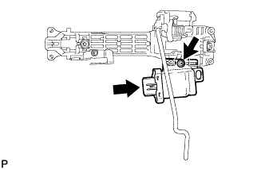
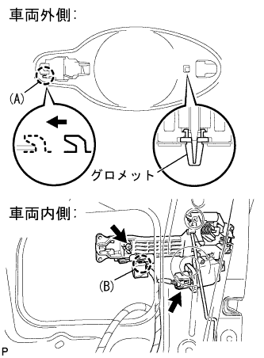
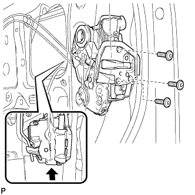
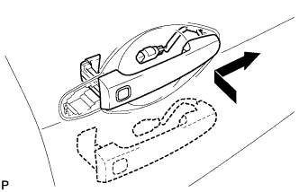
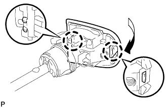
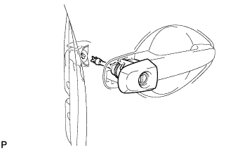
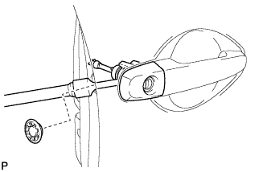
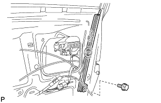
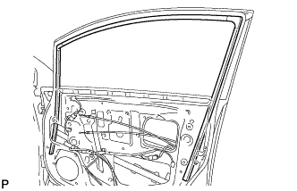

Door Electrical Key Oscillator (Installation Position Front Door) Installation |
| 1. Install Door Electrical Key Oscillator |
 |
Install the door electrical key oscillator with the screw.
| 2. Install Front Door Outside Handle Frame Sub-assembly RH |
 |
Connect the connector.
Engage claw (B).
Pull it toward the rear of the vehicle to engage claw (A), and temporarily install the front door outside handle frame RH to the front door panel.
Using a torx socket wrench T30, install the front door outside handle frame RH with the torx screw.
| 3. Install Front Door Lock Assembly RH |
Install a new door lock wire harness seal to the front door lock assembly RH.
 |
Insert the front door lock open rod RH into the front door lock assembly RH, and set it in the front door panel.
Using a torx socket wrench T30, install the front door lock assembly RH with the 3 torx screws.
| 4. Install Front Door Outside Handle Pad RR |
 |
Engage the 2 claws to install the front door outside handle pad RR.
| 5. Install Front Door Outside Handle Pad FR |
 |
Engage the 2 claws to install the front door outside handle pad FR.
| 6. Install Front Door Outside Handle Assembly RH |
 |
Insert the rear end of the front door outside handle assembly RH into the front door outside handle frame RH.
Insert the front end of the front door outside handle assembly RH into the front door outside handle frame RH, and slide it toward the front of the vehicle to install it.
 |
Connect the connector.
| 7. Install Front Door Outside Handle Cover (Driver Side Door) |
 |
Engage the 2 claws to install the front door outside handle cover RH to the front door lock cylinder assembly.
| 8. Install Front Door Outside Handle Cover w/ Lock Cylinder Assembly (Driver Side Door) |
 |
Assemble the front door outside handle cover w/ lock cylinder assembly.
 |
Using a torx socket wrench T30, install the front door outside handle cover w/ lock cylinder assembly with the torx screw.
Install the hole plug.
| 9. Install Front Door Outside Handle Cover (Front Passenger Side Door) |
 |
Using a torx socket wrench T30, install the front door outside handle cover LH with the torx screw.
Install the hole plug.
| 10. Install Front Door Frame Sub-assembly RR LWR RH |
 |
Install the front door frame RR LWR RH with the bolt.
| 11. Install Front Door Glass Run RH |
 |
Install the front door glass run RH to the front door panel.
| 12. Install Front Door Glass Sub-assembly RH |
Connect the battery negative terminal and power window regulator master switch assembly, and move the front door window regulator RH to a position where the installation position of the front door glass RH is visible.
Disconnect the battery negative terminal and power window regulator master switch assembly.
 |
Temporarily install the front door glass RH to the front door window regulator RH in the order shown in the illustration.
 |
Install the front door glass RH with the 2 bolts.
| 13. Install Front Door Service Hole Cover RH |
Apply butyl tape to the door panel side.
Pass the front door lock remote control cable RH, rear door inside locking cable RH and each connector through a new front door service hole cover RH.
 |
Align a new front door service hole cover RH with the reference position on the front door panel and attach it.
Connect the connector.
| 14. Install Front Door Glass Weatherstrip Inner RH |
 |
Install the front door glass weatherstrip inner RH to the front door panel.
| 15. Install Front Door Inside Handle Sub-assembly RH |
 |
Install the front door lock remote control cable RH and front door inside locking cable RH to the front door inside handle RH.
 |
Engage the 2 claws to install the front door inside handle RH to the front door trim board RH.
| 16. Install Front Door Trim Board Sub-assembly RH |
 |
Engage the 4 claws to install the front door trim board RH to the front door glass weatherstrip inner RH.
Engage the 9 clips to install the front door trim board RH to the front door panel.
 |
Install the 3 screws.
| 17. Install Door Assist Grip Cover RH |
 |
Engage the 4 claws to install the door assist grip cover RH to the front door trim board RH.
| 18. Install Front Door Inside Handle Bezel RH |
 |
Engage the 3 claws to install the front door inside handle bezel RH to the front door trim board RH.
| 19. Connect Battery Negative Terminal |
| 20. Setting Procedure When Disconnecting/Reconnecting Battery Terminal |
)